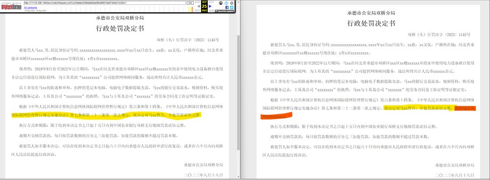

谈起河北，诸位脑中必然是贫穷、混乱、环境污染等话题，而作为一个曾经在赛里斯河北省的大学求学的人，没有人比我更懂河北，因为我拿着河北某大学的录取通知书去报到，去了发现到天津了。
神州何处是哥谭？
上一次河北火遍全球是因为唐山烧烤店打人事件，这件事令全世界感受到了21世纪的”赛里斯震撼“，此事件以后，外界盛传著名美国超级英雄 IP 蝙蝠侠中的罪恶都市”哥谭“实际上就是河北唐山。在经过大胆假设、小心求证之后，我发现这种传言并非空穴来风，在哥谭有一个犯罪团伙名叫疯子帮（Maniax），其中的成员罗伯·格林伍德（Robert Greenwood）就是一个专杀女人的疯子，在入狱前杀害并吃掉了十几个女人并且引以为荣。但是据此断定唐山就是哥谭依然是过于武断的，这些蛛丝马迹顶多只能说明唐山是哥谭的一个子集。
而近期河北承德的一起事件再次让河北为全世界熟知，承德警方在查处一位涉嫌违法连接国际互联网进行工作的程序员的时候，对其罚款200元，然后顺路没收了其三年工资，总计超过100万元，此事可以称为21世纪初叶发生于赛里斯的“抄家”事件。
而这件事让我想起有关哥谭的传言，进行考证后，真让我再次找到能体现河北和哥谭之间神秘关系的史料。哥谭市警察局（Gotham City Police Department，简称GCPD）是哥谭的主要警察机构，负责维护城市的法律和秩序，而 GCPD 警员 阿诺·佛拉斯（Arnold John Flass）的主要爱好就是在哥谭逮捕毒贩并且没收毒贩的毒品，然后自己卖掉谋取利益。
就我们目前掌握的信息来看，哥谭的范围至少应该是包含河北东北部，因为疯子帮和阿诺·佛拉斯都是哥谭地地道道的本地人，他们活动的唐山和承德应该都是隶属于哥谭市区。
从”抄家“看赛里斯法治的进步
相信赛里斯人对抄家一定不陌生，我们整个社会的成长史，实际上就是一部抄家史。
我们当今的社会建立初期，受到诸多社会利益团体的阻碍，那些地主豪绅让我们难以建立一个人人品等的乌托邦社会，所以抄家就成了我们最有力的斗争武器。一开始我们抄了地主的家，实现了孟子提出的“耕者有其田”的伟大梦想；后来我们抄了资本家的家，让赛里斯人免于被资本家剥削剩余价值；再后来我们抄了知识分子的家，让社会上没有了端着咖啡整天装逼吹牛无所事事的“文艺青年”的痕迹，社会风气有了很大的改善。
但是以上抄家事件发生的时期较早，那时候赛里斯社会尚未建立健全的法治，整个抄家过程显得过于野蛮和混乱；而在此次承德抄家事件中，则完完全全体现了赛里斯法治建设的成果。首先在案件调查中，警员完全遵照规章制度，没有发生暴力行为和刑讯逼供， 警员和嫌疑人其乐融融聊了会天就把事情摸了个一清二楚。在案件处罚环节，警员按照治安管理条例处以200元罚款，并且在政府信息网站进行了公开，流程完全合法合规。同时警员判定该程序员卡里的100多万工资为违法所得，决定全部没收，为了保护嫌疑人隐私，特地在公开的信息中没有透露没收其财产一事，可以说是考虑周到，令人暖心。 
事件受到关注前后公开的处罚决定
同时整个处罚决定也算得上是罪刑匹配，有法必依。有很多人认为100多万元是该程序员辛辛苦苦写代码赚来的工作收入，实际上是合法收入，不应该没收。但是实际上此处应该用高深的反证法进行论证，如果这个程序员不违法连接国际互联网，就无法工作，那么也就无法赚取100万元的工资。理论上他的银行卡不应该有100万元，但实际上有了一百万元，此处有了矛盾，我们的👮叔叔一举就抹平了理论和现实之间的矛盾，实在是令人钦佩，让人不禁感叹：好日子还在后头呢！
Refs：
唐山烧烤店打人事件 - 维基百科，自由的百科全书
唐山烧烤店打人事件，又称唐山打人事件、唐山打人案、烧烤店事件、唐山性暴力事件、6·10事件、陈某志等涉嫌恶势力组织违法犯罪案件，是指2022年6月10日凌晨一宗发生在中华人民共和国河北省唐山市路北区文化路街道机场路“老汉城烧烤”[1]烧烤店的性骚扰暴力打人事件。男子陈继志与其同伙欲性骚扰在店内与朋友聚餐的女子不成，无端发疯与同行多名男子暴力围殴四名中国女子。事件引起广泛舆论，多家中国大陆媒体表示此事件挑战了民众对中华人民共和国治安的良好印象[2][3]，亦引起了对中国大陆性暴力的讨论[4][5][6]。目前，涉及该案的9名犯罪嫌疑人（7男2女）被逮捕。该案由廊坊市公安局广阳分局侦查办理[7]，2022年8月移送廊坊市广阳区人民检察院审查起诉，陈继志等28名被告人因涉嫌恶势力组织违法犯罪案件被提起公诉[8]。
https://zh.wikipedia.org/zh-sg/唐山烧烤店打人事件
Robert Greenwood | Villains Wiki | Fandom
I’ve murdered a dozen women, terrorized the city.
https://villains.fandom.com/wiki/Robert_Greenwood
网传中国一名程序员“翻墙”工作被政府没收百万元人民币所得
社交媒体X（前推特）流传的消息称，一名居住在中国河北省承德市的程序员因为“翻墙”工作，被当地公安没收所得的105万8000元（人民币，下同，约19万7800新元）。根据网民在X贴出.
https://www.zaobao.com.sg/realtime/china/story20230926-1436856
行政处罚决定书查询
河北省阳光警务执法办案查询系统是全省公安机关推进执法公开工作的一个重要载体，借助信息化手段，将行政、刑事案件的办理进度、处理结果和相关法律文书等执法公开信息推送到互联网客户端，全方位的接受案件当事人查询和监督
https://web.archive.org/web/20230925062756/http://111.63.208.144/laws/web/infoqueryxzcf/xzcf/detail/0380da828a06bd69018a07d2be7c530c/1